Fresh from the field, year-round
A broad, dependable catalog spanning everyday staples and hard-to-source specialty items — grown by partners we know by name.
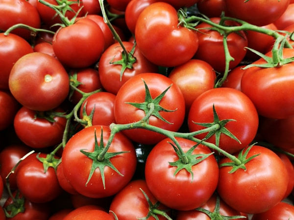
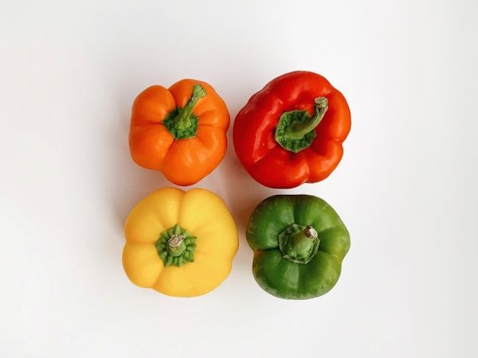
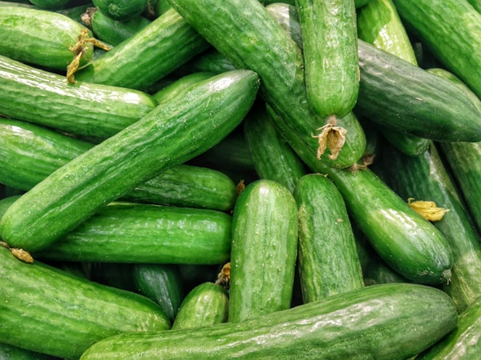
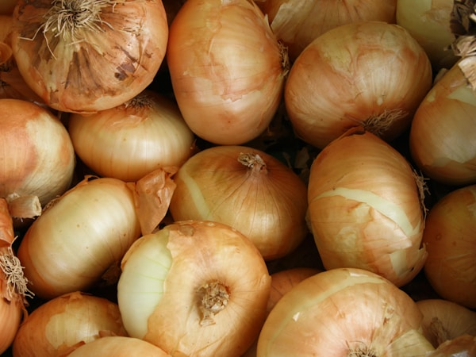
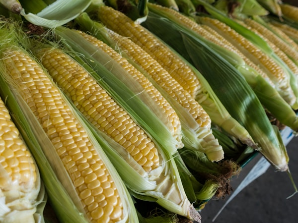
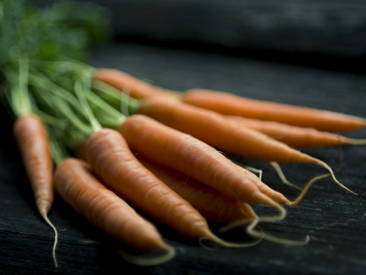
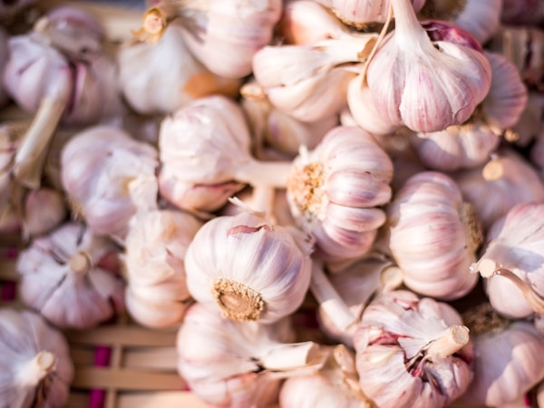
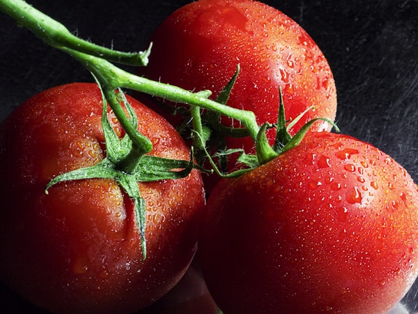
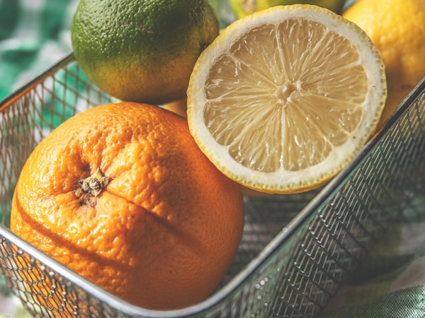
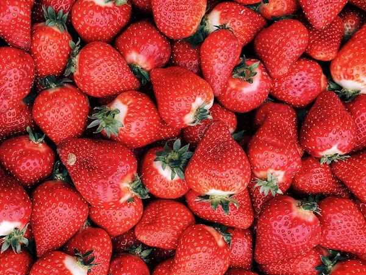
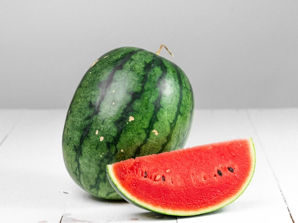
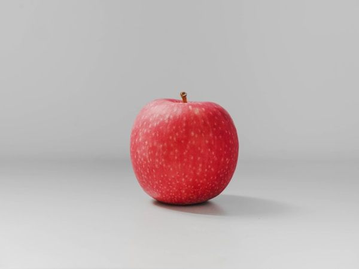
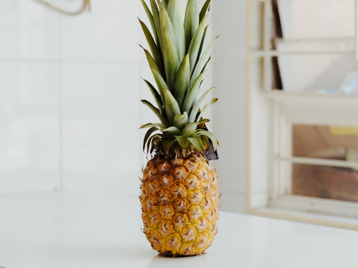
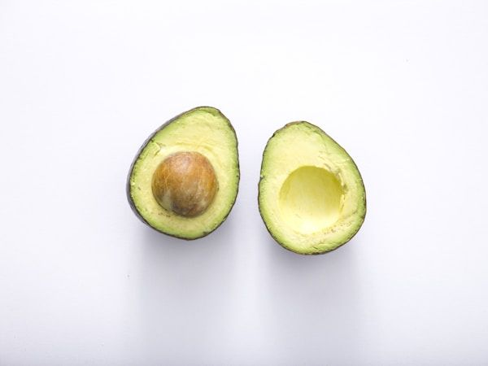
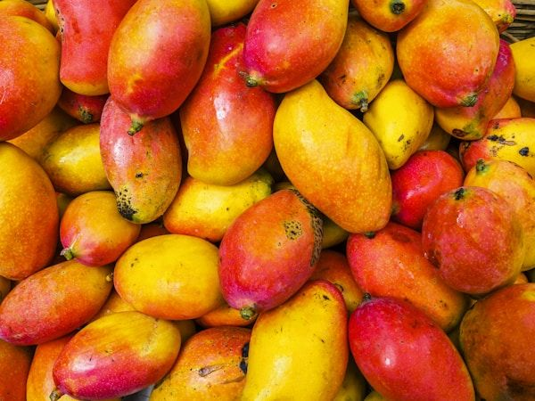
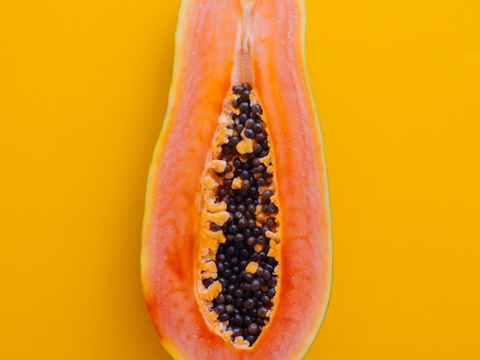
Looking for something not listed? Ask us — we source to order across both countries.
Twelve months of coverage, across overlapping regions
Domestic and Mexican growing windows overlap, so a program with us holds for a full year. Peak windows are when quality and value are strongest.
| Commodity | Jan | Feb | Mar | Apr | May | Jun | Jul | Aug | Sep | Oct | Nov | Dec |
|---|---|---|---|---|---|---|---|---|---|---|---|---|
| Tomatoes | Peak season | Peak season | Peak season | Available | Available | Available | Available | Available | Available | Peak season | Peak season | Peak season |
| Peppers | Peak season | Peak season | Peak season | Available | Available | Available | Available | Available | Available | Available | Peak season | Peak season |
| Cucumbers | Peak season | Peak season | Peak season | Available | Available | Available | Out of season | Out of season | Out of season | Available | Peak season | Peak season |
| Onions | Out of season | Out of season | Available | Peak season | Peak season | Peak season | Available | Available | Available | Out of season | Out of season | Out of season |
| Citrus | Peak season | Peak season | Available | Available | Available | Out of season | Out of season | Out of season | Out of season | Available | Peak season | Peak season |
| Melons | Out of season | Out of season | Out of season | Available | Peak season | Peak season | Peak season | Peak season | Available | Available | Out of season | Out of season |
| Avocados | Available | Available | Peak season | Peak season | Peak season | Available | Available | Available | Available | Available | Available | Available |
| Mangos | Out of season | Available | Peak season | Peak season | Peak season | Peak season | Available | Available | Available | Out of season | Out of season | Out of season |
Peak seasonAvailableOut of season
Typical windows — actual availability varies by growing region and weather. Ask your account manager for the current calendar.
Need custom quantities?
We ship to retailers, foodservice operators, and distributors of all sizes. Let's talk volume pricing and availability.